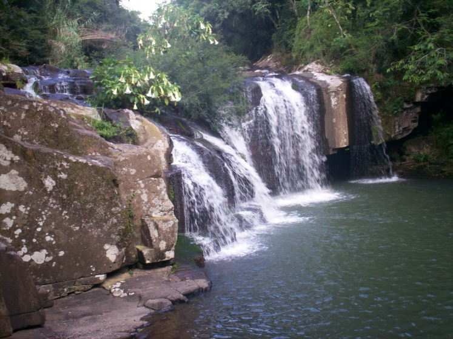
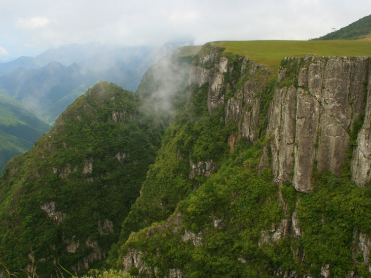
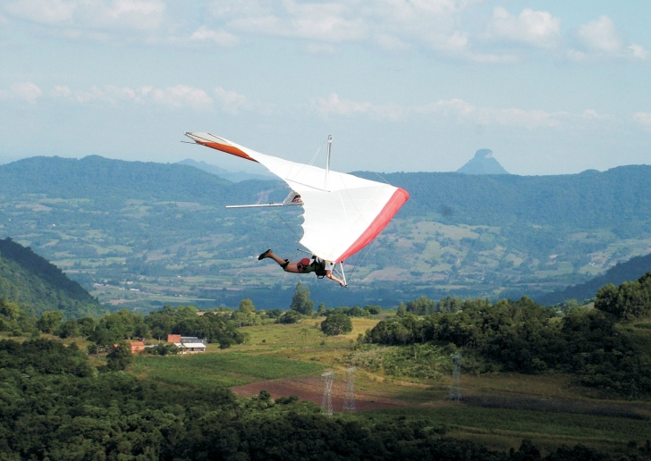
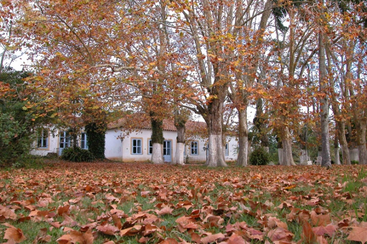
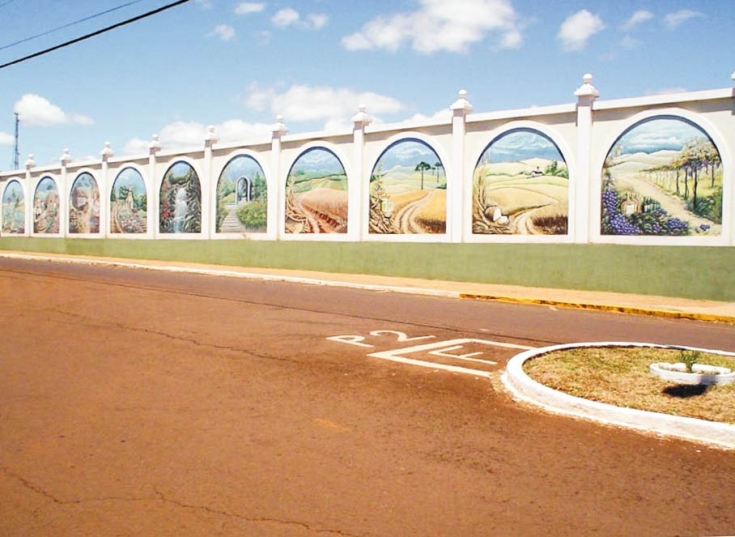

Região Alto da Serra do Botucaraí
Uma nova região turística está se organizando no coração da Rota Gemas e Joias, que se desenvolve a partir de Porto Alegre até Ametista do Sul, no extremo norte do Estado. Soledade se destaca pelo comércio e exportação de pedras preciosas e a forte tradição gaúcha; em seu entorno, municípios voltados ao agronegócio oferecem lindas paisagens e áreas de lazer. Uma nova região turística te aguarda no coração das Gemas e Jóias
Região Campos de Cima da Serra
Os parques nacionais Aparados da Serra e Serra Geral garantem experiências sensacionais e fortes emoções nas belas paisagens dos cânios, através dos programas de Ecoturismo e Aventura. A culinária típica, inspirada nas receitas com pinhão, paçoca e queijo serrano, aliada a hospitalidade das pequenas pousadas e as propriedades de Turismo Rural oferecem o aconchego e demonstram o melhor das antigas tradições tropeiras. Fortes emoções e as mais belas paisagens no Turismo de Aventura
Região Central

Localizada no coração do Estado possui cenários encantadores: coxilhas, quedas de água e belvederes se misturam com o legado paleontológico de fósseis de 200 milhões de anos. A Quarta Colônia de Imigração Italiana preserva a vida e a cultura dos imigrantes, e se revela na arquitetura, nas manifestações artísticas e nos roteiros gastronômicos.
Região Centro-Serra
A cultura da imigração italiana deixou sua marca na arquitetura e nas paisagens rurais da Rota dos Casarões em Sobradinho, município polo da região que tem na diversidade produtiva sua maior riqueza. Belas paisagens, cascatas e lagos proporcionam momentos de lazer, contemplação e bem-estar nas pequenas comunidades.
Região Costa Doce Gaúcha
A Costa Doce reúne a beleza arquitetônica da imigração ibérica em uma região tocada pela imensidão das águas lagunares e pela costa oceânica, destino de Sol e Praia consagrado por gaúchos, uruguaios e argentinos. Com o Pampa, foi cenário da Revolução Farroupilha - o mais longo conflito armado do Brasil, que durou 10 anos. Descendentes dos imigrantes germânicos diversificam a oferta com os roteiros coloniais e o Caminho Pomerano, em paisagens de rara beleza e forte identidade cultural. A arquitetura e as praias doces e salgadas são o tesouro da Costa Doce
Região Cultura e Tradição
O agronegócio, a vitalidade cultural e a excelência científica caracterizam a região que tem em Passo Fundo seu polo regional. A excelente infraestrutura geral, meios de hospedagem, alimentação e serviços compõem um ambiente favorável aos negócios e eventos, com destaque para a pioneira Jornada Nacional da Literatura. A forte identidade cultural gaúcha se manifesta nos festivais de folclore, gastronomia, artes e no Turismo Rural. Cultura e Tradição: a região ideal para o turismo de negócios e eventos